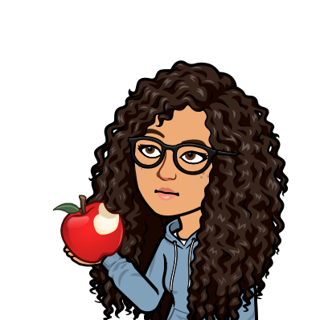
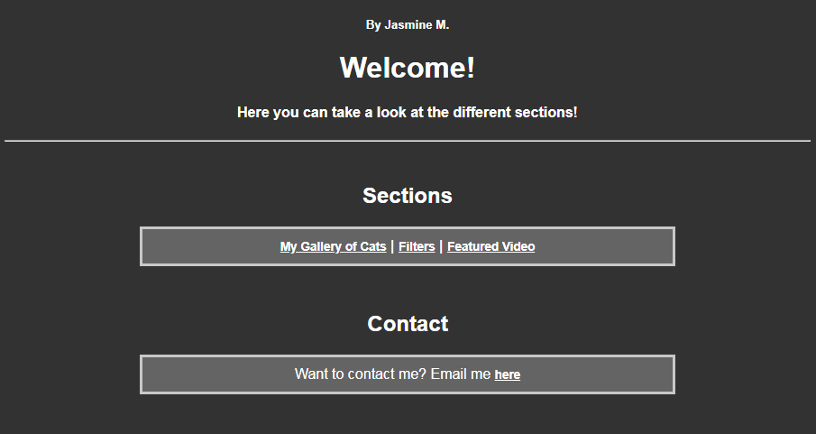
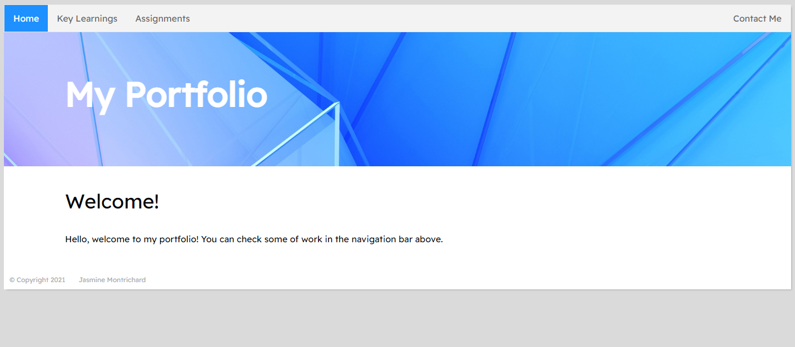

Projects

These are projects that I have started since last summer. As I look back
on my previous projects I am really proud of how far I've come.
Thanks to the early college program I am currently enrolled in called P-TECH, it allowed me to create these projects and prepare before going into post-secondary education. I am grateful I was able to take an amazing opportunity that other students may not usually get.
P-TECH Summer CODEfest Week 3 Submission
Summer of 2021
Preview SiteThis was my first personal project I made during P-TECH's summer CODEfest. I learned some basics of HTML from an app called Mimo. I don't use it anymore since I've learned a lot quicker in P-TECH's HTML/CSS courses.
Introduction to HTML - Culminating Portfolio Website
Fall of 2021
Preview SiteThis is another project I had to make while taking my first HTML course. This course helped fill the the gaps in my knowledge and I learned a lot more than what was provided in the learning app I used to learn. Looking back at it I liked the theme but the moment I looked at it, I realized that my code could be a lot more efficient. Maybe a rewrite would be nice.
Arduino Boat Project
End of January 2022
Not available
My father asked me to help him with an Arduino project. He dealt with the hardware while I was
responsible for
creating the programs. I started this project maybe a month or so after finishing the P-TECH Java
course. Since
I learned how to display basic graphics in my Java course, I pretty much knew how it would work.
The goal was to create a working indicator on a small display triggered by sensors (for wind speed,
temperature, etc.)
and/or having a small amount of voltage being sent. This was just a test to see how the sensors and
display would
be programmed so we can move our program onto a larger display.
After we finished the first program, we moved on to make 2 other programs that displayed wind speed and ground speed on a round meter that were eventually merged into one program to work on dual displays.
The whole project probably took less than a month. I had to program in C# or something, but it
wasn't much different
than Java. We eventually finished our prototype but unfortunately the project had to be put on hold
until further notice.
Technically, the only program I actually made from scratch was the program you see in the image below. I didn't make the programs from scratch but I used program files that my father found on the internet and combined them to create working indicators.
Overall, I am really grateful that I was able to learn the basics of Java early. It is always nice to get a head start into something. This made me feel more comfortable to try out other things such as potential programming/robotics competitions and more complex personal projects.

Java User Interface Program
Mid-April
Not available
I started this project because I felt that I needed to brush up on my programming in Java. I believe this was after participating in my school board's annual programming competition. In 2 days, I managed to create a basic program that would take data from either file input or by the user manually giving data. Then I decided to make it into a command line that can run a program when the user types in a command. Today, it is still incomplete. However, I learned how to create, read and write to files in Java.
Unfortunately the project file was deleted so it cannot be displayed here ☹️
Conclusion
I learned a lot from my instructors within the P-TECH program. They helped me take more steps towards achieving my goal. Without them, I wouldn't have been the person I am today.